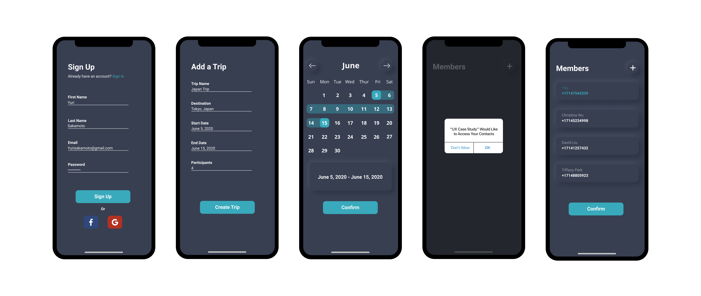
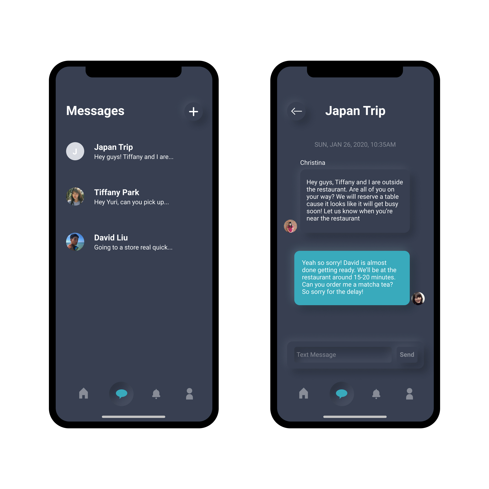
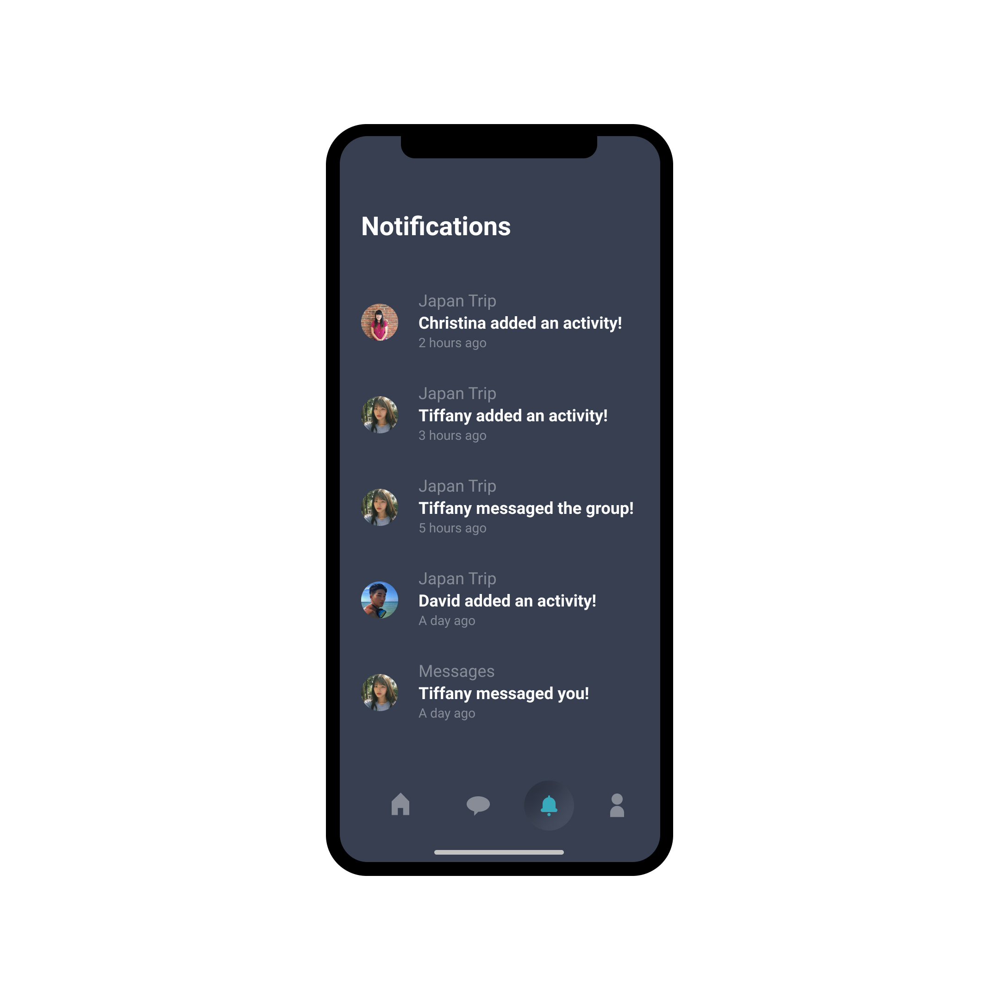

Creating a Better Group Traveling Experience
A UI/UX case study on creating a concept travel organizing app.
A UI/UX case study on creating a concept travel organizing app.

Traveling in a group can be a joyous time filled with wonderful
memories among group members. However, traveling in a group can
also be a daunting task as conflict can quickly cause group members
to butt heads. I realized that I experienced this issue in the past
with a group outing. A social gathering that began with a group of
friends ended in a group with severed ties. Seeing this as a social
issue, I wanted to know if other social groups experienced this as
well. Through research, I learned that miscommunication and conflict
among group trips is a common issue and there are even guides on
“How to stay sane when traveling in a group.”
I am someone who cherishes the relationships that I make, so I
wanted to develop a design solution that would improve the group
traveling experience.
• Redesign my first case study
• Improve the concept’s user experience
• Design with the Neumorphism UI trend for style points
• The type of scenario for this challenge involved the use of motor
vehicles or airlines as a means for transportation. So I felt 18+
years old as the target age demographic was the most fitting.
I researched group travel planning and the results were various
guides that gave insight on “how to efficiently plan trips,” along
with negative keywords, such as “without losing friends.”
Here are links to some of the guides that I have found:
After defining what the problem is, I conducted 10 to 15 minute interviews with a few friends asking them to explain their last group trip and possible issues that were involved.

• Group trips usually begin with one person doing all the planning.
Sometimes another person will help.
• Most party members tend to rely on one person to do all the
planning and do not contribute.
• Miscommunication was a major factor that sparked
conflict among group members.
• Groups set up a time and place to plan the trip.
• Members tend to split off from the group to partake in
their own activities and interests.
Communication is the biggest issue in group travel. From the research,
miscommunication tends to happen during the “planning” phase, but can
still happen at anytime during the duration of the trip. For whatever
reason, a member may refrain from speaking up about matters that they
are uncomfortable with to the group.
A common method groups do to plan out their trips is having all
participants meet at a specified time and place in order to discuss
their trip. However, the problem here is that:
1. All members must find time to fit this discussion into their schedules
2. The discussion tends to be pushed back onto a later time and date
because not all members cannot meet.
Whether the group discussion is at a dinner or in an online call,
members must set time to meet. Instead, I believe a faster approach
is for one person to create a group through an app that sends text
messages to participants to join.
This method allows participants to:
1. Join the group trip at the click of a button.
2. Respond to the text at their leisure.
3. Immediately see all information about the group’s trip after confirmation
The third issue is accommodating every member’s travel interests. Each member has their own interests and nobody will come home happy if they were unable to accomplish what they wanted to do on the trip. To create a better experience, group participants should have the freedom to add activities at their own time that notifies the rest of the group on who is going, what the activity is, when is it and where is it.
I previously did not have a persona for this project. My
initial designs would lose its flow because I did not have a
specific audience in mind. I developed this persona based on the
data from my interviews.

I mapped out a visual of the userflow to help me
understand how the app would function.

I wanted to include a style guide to help me figure out the
visual design and to make this study feel complete.


Once an account is created, the user is prompted to fill out a form that will create their trip page. This screen is my solution to the “Who, What, When and Where?” question.
This was my solution to Pain Point #2 where the host user can create a page from the app and select their friends’ numbers to be added to the trip. This saves time because the group participants no longer have to set a time and date to meet and can simply respond to the text message at their leisure.
After creating their first trip page, the user will be taken to the
homepage where they will see an overview of their upcoming trip.
In addition, the user has the freedom to create more trip pages and
any page additions will be placed under the “Planned Trips” section
below the “Upcoming Trips.”
Since I am limiting the UI of each screen, in theory the homepage
could potentially have more features, such as food and local event
recommendations.
If the user clicks on any of the “Trip” tabs, they will be taken to another page that details all the information specific to that trip. From here, they can see the Google maps location of their destination, when the trip will take place and who is going.

I added a custom activity feature for the participants of that trip. This solves Pain Point #3 because each participant can create an activity that accommodates to their own plans and interests. All group members will be able to see who is going to each activity, what activities were added, when and where each activity will take place. As a bonus, if a user clicks on an active activity, they will be given an option to join it.

I believed a built-in messaging system for a trip planning app is very helpful in solving communications issues. Since I mentioned in Pain Point #1 that communication was a major issue, a built-in messaging system helps save time from using another messaging app and much more convenient since it would be one click away. This would allow participants to notify each other quickly for upcoming events or last minute schedule changes.
Since the functionality of this trip app involves adding and removing different features, a messaging system and activity notifications, it would be beneficial for the user if they were notified of frequent changes so they do not miss out on opportunities or important messages.

I used Figma to design and create a working prototype of the app.
Try out the Figma prototype here
The research was a tedious part of the process, but the information gathered played a crucial part in the final design.